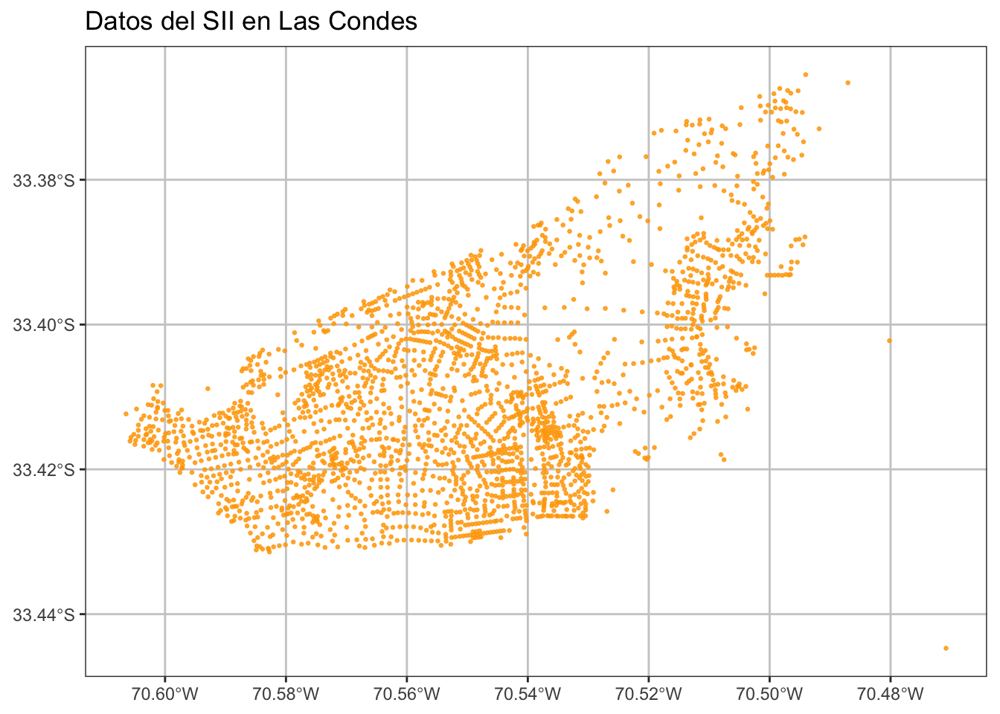
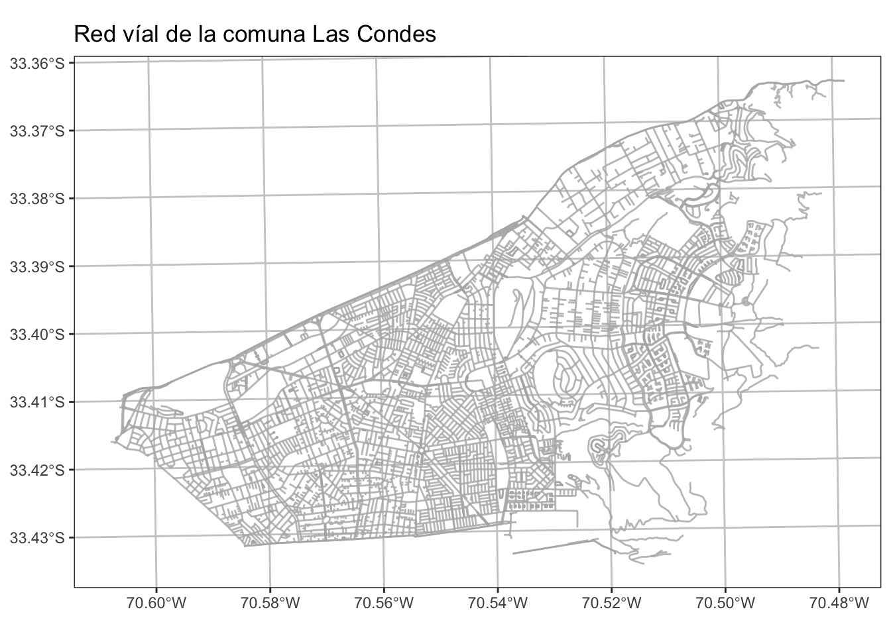
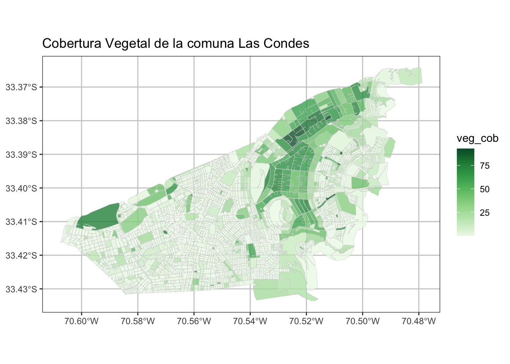
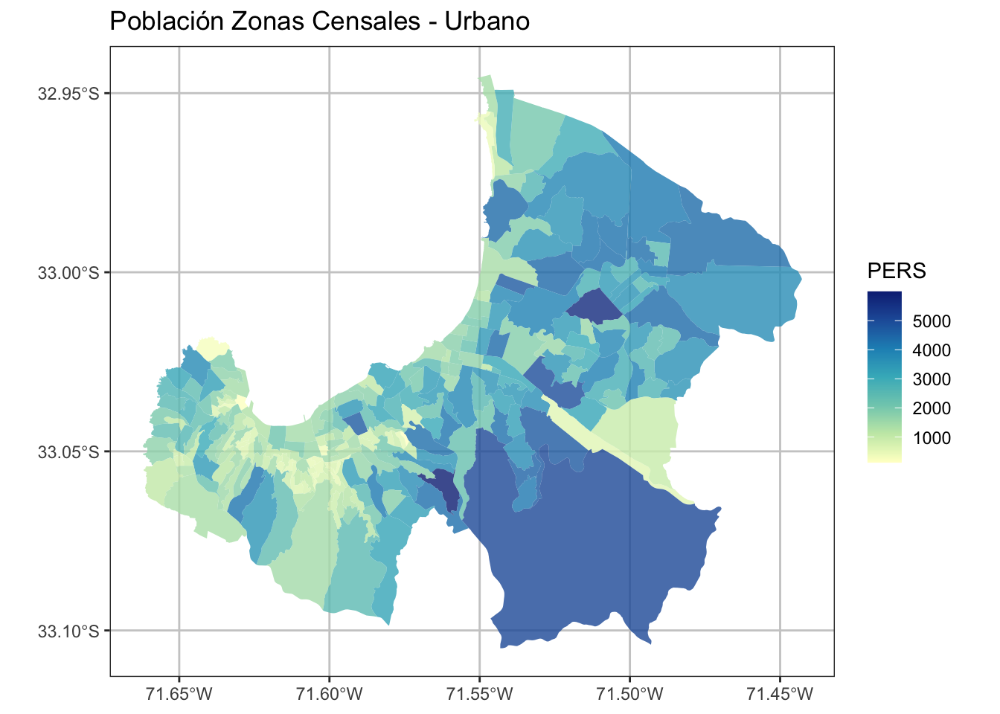
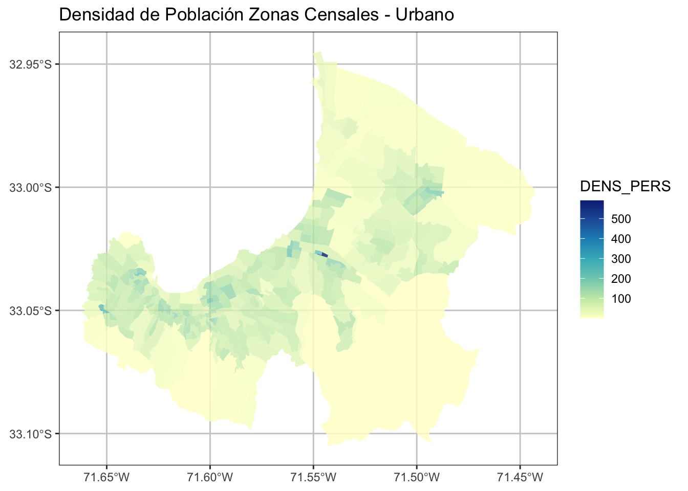
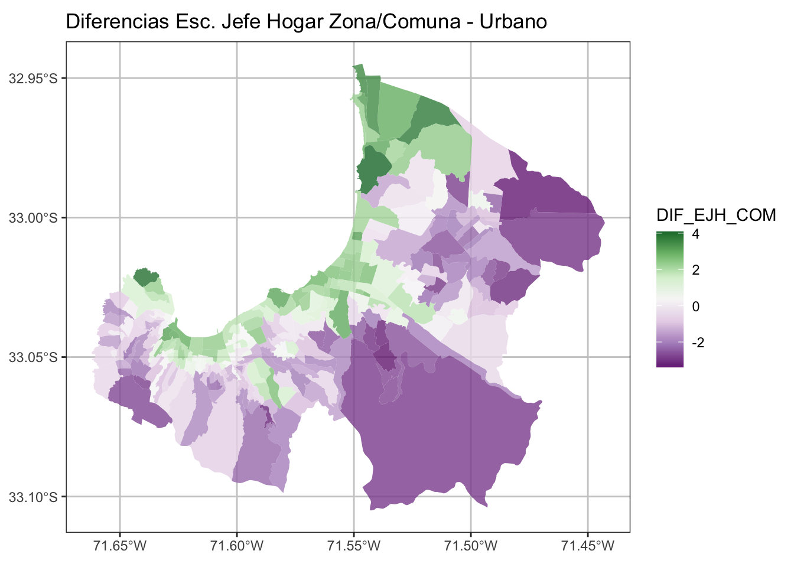
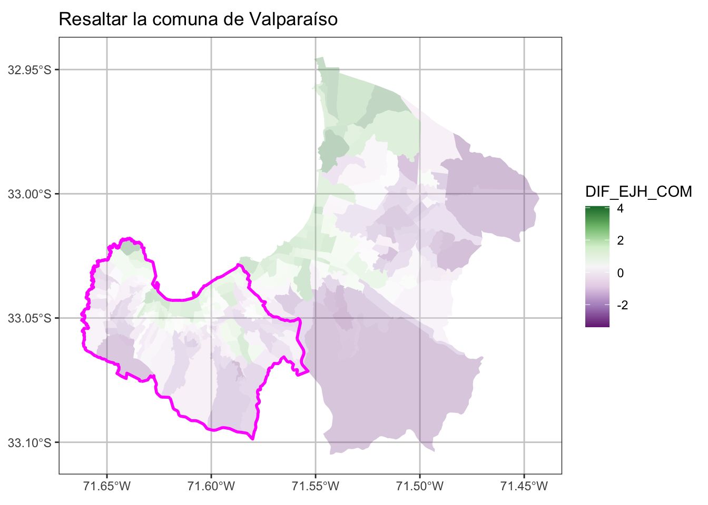
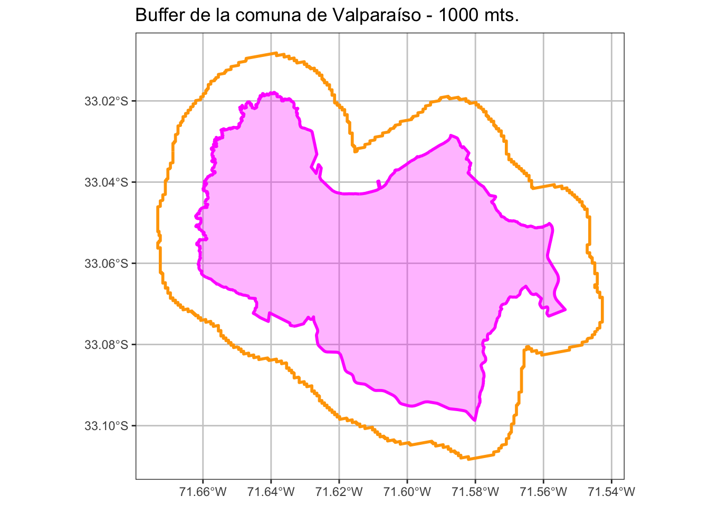
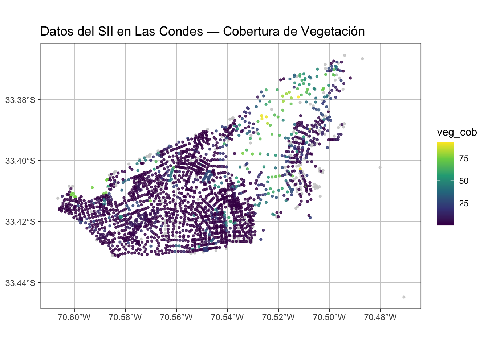

# install.packages("sf")
library(sf) # manipulación de datos vectoriales
library(mapview) # visualización de mapas dinámicos
library(ggplot2) # gráficos
library(RColorBrewer) #paleta de colores6 Datos Espaciales: Vectores
Manipulación de Vectores Espaciales
6.1 Objetivos del Módulo
La presente Sesión tiene como objetivo principal introducir conceptos generales y manipulación básica de datos de tipo vectorial (punto, lineas, polígonos).
6.2 Definición General de Datos Espaciales
La representación de un territorio requiere datos geográficos compuestos por información espacial (geometrías asociadas a una ubicación real en el mundo) e información de atributos (características y variables asociadas a estas geometrías).

6.3 Datos Vectoriales
Los datos vectoriales son uno de los tipos fundamentales en los que se representa la información espacial. Este formato se caracteriza por describir los elementos del espacio a través de puntos, líneas y polígonos. Cada uno de estos objetos puede tener atributos asociados que describen características adicionales como el uso del suelo, la densidad poblacional, o cualquier otra variable relevante para el análisis.
En políticas públicas, los datos vectoriales juegan un rol clave en la toma de decisiones, ya que permiten analizar la distribución espacial de fenómenos, desde la localización de infraestructuras hasta la incidencia de eventos sociales y delictivos. A través de las herramientas de análisis vectorial, es posible identificar patrones, relaciones espaciales y tomar decisiones fundamentadas sobre la planificación y gestión del territorio.
En este capítulo, utilizaremos la librería sf para la lectura y manipulación de datos vectoriales en R. Esta librería es ampliamente utilizada en la comunidad de análisis espacial debido a su eficiencia y su integración con otras herramientas como dplyr para el manejo de tablas de atributos.
Tipos de Datos Vectoriales espaciales básicos
Representación mediante coordenadas que se pueden unir espacialmente o no. Corresponde a 3 tipos de geometrías: puntos, líneas y polígonos.

Fuente: https://r-spatial.github.io/sf/articles/sf1.html
| Tipo | Descripción |
|---|---|
| POINT | Geometría de dimensión cero que contiene un único punto |
| LINESTRING | Secuencia de puntos conectados por segmentos rectos, no auto-intersecantes; geometría unidimensional |
| POLYGON | Geometría con área positiva (bidimensional); la secuencia de puntos forma un anillo cerrado y no auto-intersecante; el primer anillo denota el anillo exterior, cero o más anillos posteriores representan huecos en este anillo exterior |
| MULTIPOINT | Conjunto de puntos; un MULTIPOINT es simple si no hay dos puntos iguales dentro del conjunto |
| MULTILINESTRING | Conjunto de líneas (linestrings) |
| MULTIPOLYGON | Conjunto de polígonos |
| GEOMETRYCOLLECTION | Conjunto de geometrías de cualquier tipo, excepto GEOMETRYCOLLECTION |
### Lectura de Insumos
El paquete sf facilita la importación de estos datos, que suelen estar en formatos como shapefile (.shp) o GeoJSON (.geojson), etc. la función nativa para esto es st_read(). Para los efectos prácticos de esta etapa se utilizará la base de datos del censo a nivel zonal a nivel nacional que en este caso esta almacenado bajo la estrucura rds nativa de R, pero manteniendo todos los atributos y geometrías espaciales.
6.3.1 Puntos
Tiene un par de coordenadas “x” e “y”. Es utilizado para información de tipo puntual, como por ejemplo equipamiento urbano, postes, árboles, entre otros.

Cargar librerías
Lectura de archivos tipo puntos
sii_LC <- st_read("data/sii/sii_urbe_LC.shp")Reading layer `sii_urbe_LC' from data source
`/Users/denisberroeta/Documents/Docencia/geoanalisis/geoanalisis-2026/cgeoa-2026-book/data/sii/sii_urbe_LC.shp'
using driver `ESRI Shapefile'
Simple feature collection with 2310 features and 11 fields
Geometry type: POINT
Dimension: XY
Bounding box: xmin: -70.60645 ymin: -33.44471 xmax: -70.47083 ymax: -33.36548
Geodetic CRS: +proj=longlat +datum=WGS84 +no_defsVisualización de los puntos
# Visualización ggplot y sf
ggplot() +
geom_sf(data = sii_LC, col = "orange", alpha=0.8, size= 0.5)+
ggtitle("Datos del SII en Las Condes" ) +
theme_bw() +
theme(legend.position="none")+
theme(panel.grid.major = element_line(colour = "gray80"),
panel.grid.minor = element_line(colour = "gray80"))
# mapview(sii_LC, zcol = "atractor", cex =2)6.4 Líneas
Tiene tantas coordenadas como vértices. La información que representa es de tipo lineal, como por ejemplo calles, ríos, redes energéticas, entre otros. Existen las líneas cerradas, las cuales se pueden entender como el perímetro de una superficie (sin relleno).

Lectura de líneas
las_condes_red <- readRDS("data/redes/RED_LAS_CONDES.rds")
# las_condes_redvisualización Líneas
ggplot() +
geom_sf(data = las_condes_red, col = "gray70", alpha=0.8, size= 0.5)+
ggtitle("Red víal de la comuna Las Condes" ) +
theme_bw() +
theme(legend.position="none")+
theme(panel.grid.major = element_line(colour = "gray80"),
panel.grid.minor = element_line(colour = "gray80"))
# mapview(las_condes_red)6.5 Polígonos
Tiene tantas coordenadas como vértices. La información que representa es de tipo área, como por ejemplo división política administrativa, manzanas, construcciones, entre otras.

Lectura de polígonos
las_condes_mz <- st_read("data/shape/icv_las_condes.shp", quiet=T)
# las_condes_ptosVisualización polígonos
ggplot() +
geom_sf(data = las_condes_mz, aes(fill = veg_cob), color ="gray80",
alpha=0.8, size= 0.1)+
scale_fill_distiller(palette="Greens", direction = 1)+
ggtitle("Cobertura Vegetal de la comuna Las Condes" ) +
theme_bw() +
theme(panel.grid.major = element_line(colour = "gray80"),
panel.grid.minor = element_line(colour = "gray80"))
# mapview(las_condes_mz, zcol = "veg_cob")6.6 Actividades Prácticas
Seleccione una comuna de las manzanas del INE, visualiza con ggplot. Además genere una tabla resumen de suma de personas, hombres, mujeres viviendas por Zona Censal.
Tips
Leer Archivo:
mz_ine <- readRDS("../data/censo/manz_INE_2017_sf.rds")Seleccionar Comuna con dplyr::filter()
Eliminar geometrías sf::st_drop_geometry() ya que no es necesaria para realizar tabla resumen.
6.7 Manipulación de Datos Vectoriales
Además de las geometrías espaciales, los datos vectoriales incluyen una tabla de atributos que contiene información adicional sobre cada objeto espacial. Esta tabla de atributos es esencial para realizar análisis más profundos, ya que nos permite filtrar, seleccionar, crear columnas nuevas y resumir los datos según diferentes criterios.

Para la manipulación de datos vectoriales se usará la sección de atributos que la estructura sf permite para lo cual utilizaremos la librería dplyr cómo si fuera un dataframe.
Cargar librerías
# install.packages("sf")
library(sf) # manipulación de datos vectoriales
library(dplyr) # manipulación de tablas de atributos
library(mapview) # visualización de mapas dinámicos
library(ggplot2) # gráficos
library(RColorBrewer) #paleta de colores
library(viridis) #paleta de colores# sii_LC <- st_read("data/sii/sii_urbe_LC.shp")
zonas_censales <- readRDS("data/censo/zonas_urb_consolidadas.rds")| REGION | NOM_REGION | PROVINCIA | NOM_PROVIN | COMUNA | NOM_COMUNA | URBANO | DISTRITO | LOC_ZON | GEOCODIGO | AREA | COD_INE_15 | COD_INE_16 | VALIDO | KM2 | ESC_JH | PERS | M2_O | M2_C | DENS_HAB | DENS_OF | DENS_COM | geometry |
|---|---|---|---|---|---|---|---|---|---|---|---|---|---|---|---|---|---|---|---|---|---|---|
| 1 | REGIÓN DE TARAPACÁ | 14 | TAMARUGAL | 1405 | PICA | PICA | 1 | 1 | 1405011001 | 9336400.3 | 1405011001 | 1405011001 | TRUE | 9.3364003 | 10.817377 | 3876 | 0.0000 | 0.0000 | 415.1493 | 0.0000 | 0.00000 | MULTIPOLYGON (((-69.31192 -... |
| 1 | REGIÓN DE TARAPACÁ | 14 | TAMARUGAL | 1401 | POZO ALMONTE | POZO ALMONTE | 1 | 1 | 1401011001 | 1941994.2 | 1401011001 | 1401011001 | TRUE | 1.9419942 | 10.224880 | 2771 | 1476.0000 | 4093.0000 | 1426.8838 | 760.0435 | 2107.62731 | MULTIPOLYGON (((-69.78591 -... |
| 1 | REGIÓN DE TARAPACÁ | 14 | TAMARUGAL | 1401 | POZO ALMONTE | POZO ALMONTE | 1 | 2 | 1401011002 | 3572254.9 | 1401011002 | 1401011002 | TRUE | 3.5722549 | 10.253158 | 6506 | 1905.0000 | 9696.0000 | 1821.2586 | 533.2766 | 2714.25201 | MULTIPOLYGON (((-69.76215 -... |
| 1 | REGIÓN DE TARAPACÁ | 14 | TAMARUGAL | 1404 | HUARA | HUARA | 1 | 1 | 1404011001 | 603314.2 | 1404011001 | 1404011001 | TRUE | 0.6033142 | 9.523220 | 1082 | 0.0000 | 0.0000 | 1793.4270 | 0.0000 | 0.00000 | MULTIPOLYGON (((-69.7696 -1... |
| 1 | REGIÓN DE TARAPACÁ | 11 | IQUIQUE | 1107 | ALTO HOSPICIO | ALTO HOSPICIO | 1 | 2 | 1107011002 | 2272129.2 | 1107011002 | 1107011002 | TRUE | 2.2721292 | 9.747321 | 4360 | 475.0686 | 180.6789 | 1918.9050 | 209.0852 | 79.51965 | MULTIPOLYGON (((-70.09246 -... |
| 1 | REGIÓN DE TARAPACÁ | 11 | IQUIQUE | 1107 | ALTO HOSPICIO | ALTO HOSPICIO | 3 | 2 | 1107031002 | 5820325.8 | 1107031002 | 1107031002 | TRUE | 5.8203258 | 9.397516 | 7099 | 4003.6214 | 1008.7833 | 1219.6912 | 687.8690 | 173.32076 | MULTIPOLYGON (((-70.05305 -... |
6.7.1 Filtros y selección de columnas
Uno de los pasos más comunes en la manipulación de datos vectoriales es filtrar y seleccionar filas o columnas de la tabla de atributos, lo que permite centrarse en elementos específicos para análisis más detallados. Para efectos de practicar la manipulación de datos espaciales se creará un subset de la base de zonas censales de alguna provincia de Chile y se realizarán cálculos sencillos de densidad.
Filtrar
| Operador | Comparación | Ejemplo | Resultado |
|---|---|---|---|
| x | y | x Ó y es verdadero | TRUE | FALSE | TRUE |
| x & y | x Y y son verdaderos | TRUE & FALSE | FALSE |
| !x | x no es verdadero (negación) | !TRUE | FALSE |
| isTRUE(x) | x es verdadero (afirmación) | isTRUE(TRUE) | TRUE |
# zonas_censales$NOM_PROVIN %>% unique() %>% sort()
zonas <- zonas_censales %>%
filter(NOM_PROVIN == "VALPARAÍSO") %>%
filter(URBANO %in% c("VIÑA DEL MAR", "VALPARAÍSO") )
# mapview::mapview(zonas, zcol = "PERS")ggplot() +
geom_sf(data = zonas, aes(fill = PERS), color =NA,
alpha=0.8, size= 0.1)+
scale_fill_distiller(palette= "YlGnBu", direction = 1)+
ggtitle("Población Zonas Censales - Urbano" ) +
theme_bw() +
theme(panel.grid.major = element_line(colour = "gray80"),
panel.grid.minor = element_line(colour = "gray80"))
Selección de columnas
zonas <- zonas %>%
dplyr::select(GEOCODIGO,NOM_REGION, NOM_PROVIN,
NOM_COMUNA, PERS, URBANO, ESC_JH)6.7.2 Generación columnas
Mutate
Cálculo de superficie por polígono
zonas <- zonas %>%
mutate(AREA = as.numeric(st_area(.))) %>% # en metros cuadrados
mutate(AREA = AREA/10000) %>% # en hectárea cuadrada
mutate(DENS_PERS= round(PERS/AREA, 1))
# zonasggplot() +
geom_sf(data = zonas, aes(fill = PERS), color =NA,
alpha=0.8, size= 0.1)+
scale_fill_distiller(palette= "YlGnBu", direction = 1)+
ggtitle("Población Zonas Censales - Urbano" ) +
theme_bw() +
theme(panel.grid.major = element_line(colour = "gray80"),
panel.grid.minor = element_line(colour = "gray80"))
ggplot() +
geom_sf(data = zonas, aes(fill = DENS_PERS), color =NA,
alpha=0.8, size= 0.1)+
scale_fill_distiller(palette= "YlGnBu", direction = 1)+
ggtitle("Densidad de Población Zonas Censales - Urbano" ) +
theme_bw() +
theme(panel.grid.major = element_line(colour = "gray80"),
panel.grid.minor = element_line(colour = "gray80"))

6.7.3 Resumen Estadísticos Espaciales
El objetivo de este punto es que con bases de datos espaciales también se pueden hacer resúmenes estadísticos, como se hacen normalmente con bases de datos. Ahora, se creará tabla con las poblaciones y promedio de años de estudio del Jefe de Hogar en todas las comunas de Chile.
Un punto importante para generar esta tabla es eficiente eliminar la geometría para los cálculos ya que la salida será una tabla.
tab_com <- zonas_censales %>%
st_drop_geometry() %>% # eliminar geometría.
group_by(NOM_COMUNA) %>%
summarise(POB_COM = sum(PERS, na.rm = T),
ESC_JH_COM = round(mean(ESC_JH, na.rm= T), 1))| NOM_COMUNA | POB_COM | ESC_JH_COM |
|---|---|---|
| ALGARROBO | 10880 | 12.1 |
| ALHUÉ | 2706 | 9.6 |
| ALTO HOSPICIO | 105065 | 10.4 |
| ANCUD | 28162 | 10.0 |
| ANDACOLLO | 9989 | 8.8 |
| ANGOL | 48608 | 10.1 |
| ANTOFAGASTA | 349983 | 12.2 |
| ANTUCO | 2038 | 9.2 |
| ARAUCO | 27274 | 9.8 |
| ARICA | 203132 | 11.5 |
6.7.4 Joining
En este caso agregaremos a la tabla de resultados comunales antes creada, a la base de la comuna de Viña del Mar y Valparaíso, utilizaremos la función left_join.

left_join. Ejemplos en R para Ciencia de Datos.zonas <- zonas %>%
left_join(tab_com, by = "NOM_COMUNA") %>% # Ojo con las veces que se hace esta operación
mutate(DIF_EJH_COM = round(( ESC_JH-ESC_JH_COM), 2))ggplot() +
geom_sf(data = zonas, aes(fill = DIF_EJH_COM), color =NA,
alpha=0.8, size= 0.1)+
scale_fill_distiller(palette= "PRGn", direction = 1)+
ggtitle("Diferencias Esc. Jefe Hogar Zona/Comuna - Urbano" ) +
theme_bw() +
theme(panel.grid.major = element_line(colour = "gray80"),
panel.grid.minor = element_line(colour = "gray80"))
6.8 Operaciones Espaciales con sf
Las operaciones espaciales son el conjunto de herramientas que permiten realizar cálculos y transformaciones sobre los datos espaciales vectoriales. Estas operaciones son fundamentales para análisis de proximidad, intersección, disolución de fronteras y creación de buffers, entre otras.
Podemos clasificar las operaciones sobre geometrías en función de lo que toman como entrada y lo que devuelven como salida. En cuanto a la salida tenemos operaciones que devuelven:
- predicates: una lógica que afirma una determinada propiedad es
TRUE - measures: una cantidad (un valor numérico, posiblemente con unidad de medida)
- transformations: nuevas geometrías generadas en cuanto a lo que operan, distinguimos las operaciones que son:
- unary cuando trabajan en una única geometría
- binary cuando trabajan con pares de geometrías
- n-ary cuando trabajan con conjuntos de geometrías
6.8.1 Operaciones en la misma geometría
Unary predicates
Los predicados unitarios describen una determinada propiedad de una geometría. Los predicados is_simple, is_valid, y is_empty devolver respectivamente si una geometría es simple, válida o vacía. Dado un sistema de referencia de coordenadas, is_longlat devuelve si las coordenadas son geográficas o proyectadas. es(geometría, clase)` comprueba si una geometría pertenece a una clase determinada.
st_is_valid(zonas) %>% head(10) [1] TRUE TRUE TRUE TRUE TRUE TRUE TRUE TRUE TRUE TRUEUnary measures
Las medidas unarias devuelven una medida o cantidad que describe una propiedad de la geometría:
| medida | devuelve |
|---|---|
dimension |
0 para puntos, 1 para líneas, 2 para polígonos, posiblemente NA para geometrías vacías |
area |
el área de una geometría |
length |
la longitud de una geometría lineal |
Ejemplo cuando calculamos el área de cada polígono de zona censal.
# st_area(zonas)
zonas_area <- zonas %>%
mutate(AREA = as.numeric(st_area(.))) # área en metros cuadradosUnary transformers
Las transformaciones unarias funcionan por geometría y devuelven para cada geometría una nueva geometría.
| transformador | devuelve una geometría … | |
|---|---|---|
centroid |
de tipo POINT con el centroide de la geometría |
|
buffer |
que es más grande (o más pequeña) que la geometría de entrada, dependiendo del tamaño del buffer | |
jitter |
que ha sido movida en el espacio una cierta cantidad, usando una distribución uniforme bivariada | |
wrap_dateline |
cortada en piezas que ya no cruzan ni cubren la línea de cambio de fecha | |
boundary |
con el límite de la geometría de entrada | |
convex_hull |
que forma el envolvente convexo de la geometría de entrada | |
line_merge |
después de unir elementos LINESTRING conectados de un MULTILINESTRING en LINESTRINGs más largos |
|
make_valid |
que es válida | |
node |
con nodos añadidos a geometrías lineales en las intersecciones sin nodo; solo funciona en geometrías lineales individuales | |
point_on_surface |
con un (arbitrario) punto en una superficie | |
polygonize |
de tipo polígono, creada a partir de líneas que forman un anillo cerrado | |
segmentize |
una geometría (lineal) con nodos a una densidad o distancia mínima dada | |
simplify |
simplificada mediante la eliminación de vértices/nodos (líneas o polígonos) | |
split |
que ha sido dividida con una línea divisoria | |
transform |
transformada o convertida a un nuevo sistema de referencia de coordenadas | |
triangulate |
con polígonos triangulados de Delaunay | |
voronoi |
con la teselación de Voronoi de una geometría de entrada | |
zm |
con coordenadas Z y/o M eliminadas o añadidas |
|
collection_extract |
con sub-geometrías de un GEOMETRYCOLLECTION de un tipo particular |
|
cast |
que se convierte a otro tipo | |
+ |
que se desplaza sobre un vector dado | |
* |
que se multiplica por un escalar o matriz |
# st_area(zonas)
zonas_points <- zonas %>%
sample_n(10) %>%
st_centroid()Otros Ejemplos de operaciones sobre una geometría tipo puntos

Unión de Polígonos
Primeramente se creará una geometría comunal basándose en las zonas censales utilizando la función st_union()
valpo_com <- zonas %>% filter(NOM_COMUNA == "VALPARAÍSO") %>%
st_union()ggplot() +
geom_sf(data = zonas, aes(fill = DIF_EJH_COM), color =NA,
alpha=0.3, size= 0.1)+
scale_fill_distiller(palette= "PRGn", direction = 1)+
geom_sf(data = valpo_com, color ="magenta", alpha=1, size= 1, fill = NA)+
ggtitle("Resaltar la comuna de Valparaíso" ) +
theme_bw() +
theme(panel.grid.major = element_line(colour = "gray80"),
panel.grid.minor = element_line(colour = "gray80"))
Buffer
Aplicación de Buffer con la función de st_buffer, que tiene el parámetro distque dice relación a los metros que se quiere hacer el buffer (también puede ser negativo)
#buffer exterior cuando el valor de dist es positivo
valpo_com_buffer <- valpo_com %>%
st_buffer(dist = 1000) # %>% st_simplify(dTolerance = 100)
#buffer interior cuando el valor de dist es negativo
valpo_com_buffer_menos <- valpo_com %>%
st_buffer(dist = - 500) # %>% st_simplify(dTolerance = 100) ggplot() +
geom_sf(data = valpo_com, color ="magenta", alpha=0.3, size= 1, fill = "magenta")+
geom_sf(data = valpo_com_buffer, color ="orange", alpha=1, size= 1, fill = NA)+
geom_sf(data = valpo_com_buffer_menos, color ="red", alpha=1, size= 1, fill = NA)+
ggtitle("Buffer de la comuna de Valparaíso - 1000 mts." ) +
theme_bw() +
theme(panel.grid.major = element_line(colour = "gray80"),
panel.grid.minor = element_line(colour = "gray80"))
6.8.2 Operaciones entre multiples geometrías
Una consideración importante, cuando se hacen operaciones espaciales entre dos geometrías es importantes que ambas estén bajo el mismo sistema de referencias de coordenadas, por cual empezaremos con esto a continuación.
Transformación de CRS
Los sistemas de coordenadas forman la base de cálculo para describir la posición de un punto a partir de mediciones geodésicas: distancias, proporciones de distancias (sin escala) y ángulos. Las coordenadas nunca pueden medirse, solamente se calculan con referencia un sistema de coordenadas bien definido. Mayores detalles ver la sección en apéndices sobre Sistemas de Referencias de Coordenadas (Appendix C).
Para el caso de Chile usamos dos sistemas de referencias de coordenadas:
- Coordenadas elipsoidales (geodésicas):
-
4326 o
"+proj=longlat +datum=WGS84 +no_defs" - Coordenadas proyectadas (métricas):
-
32719 o
"+proj=utm +zone=19 +south +datum=WGS84 +units=m +no_defs"
Las medidas unarias devuelven una medida o cantidad que describe una propiedad de la geometría:
Reproyectar Vectores
zonas_censales <- readRDS("data/censo/zonas_urb_consolidadas.rds")
st_crs(zonas_censales)Coordinate Reference System:
User input: EPSG:4326
wkt:
GEOGCRS["WGS 84",
ENSEMBLE["World Geodetic System 1984 ensemble",
MEMBER["World Geodetic System 1984 (Transit)"],
MEMBER["World Geodetic System 1984 (G730)"],
MEMBER["World Geodetic System 1984 (G873)"],
MEMBER["World Geodetic System 1984 (G1150)"],
MEMBER["World Geodetic System 1984 (G1674)"],
MEMBER["World Geodetic System 1984 (G1762)"],
MEMBER["World Geodetic System 1984 (G2139)"],
MEMBER["World Geodetic System 1984 (G2296)"],
ELLIPSOID["WGS 84",6378137,298.257223563,
LENGTHUNIT["metre",1]],
ENSEMBLEACCURACY[2.0]],
PRIMEM["Greenwich",0,
ANGLEUNIT["degree",0.0174532925199433]],
CS[ellipsoidal,2],
AXIS["geodetic latitude (Lat)",north,
ORDER[1],
ANGLEUNIT["degree",0.0174532925199433]],
AXIS["geodetic longitude (Lon)",east,
ORDER[2],
ANGLEUNIT["degree",0.0174532925199433]],
USAGE[
SCOPE["Horizontal component of 3D system."],
AREA["World."],
BBOX[-90,-180,90,180]],
ID["EPSG",4326]]zonas_utm <- zonas_censales %>% st_transform(32719)
st_crs(zonas_utm)Coordinate Reference System:
User input: EPSG:32719
wkt:
PROJCRS["WGS 84 / UTM zone 19S",
BASEGEOGCRS["WGS 84",
ENSEMBLE["World Geodetic System 1984 ensemble",
MEMBER["World Geodetic System 1984 (Transit)"],
MEMBER["World Geodetic System 1984 (G730)"],
MEMBER["World Geodetic System 1984 (G873)"],
MEMBER["World Geodetic System 1984 (G1150)"],
MEMBER["World Geodetic System 1984 (G1674)"],
MEMBER["World Geodetic System 1984 (G1762)"],
MEMBER["World Geodetic System 1984 (G2139)"],
MEMBER["World Geodetic System 1984 (G2296)"],
ELLIPSOID["WGS 84",6378137,298.257223563,
LENGTHUNIT["metre",1]],
ENSEMBLEACCURACY[2.0]],
PRIMEM["Greenwich",0,
ANGLEUNIT["degree",0.0174532925199433]],
ID["EPSG",4326]],
CONVERSION["UTM zone 19S",
METHOD["Transverse Mercator",
ID["EPSG",9807]],
PARAMETER["Latitude of natural origin",0,
ANGLEUNIT["degree",0.0174532925199433],
ID["EPSG",8801]],
PARAMETER["Longitude of natural origin",-69,
ANGLEUNIT["degree",0.0174532925199433],
ID["EPSG",8802]],
PARAMETER["Scale factor at natural origin",0.9996,
SCALEUNIT["unity",1],
ID["EPSG",8805]],
PARAMETER["False easting",500000,
LENGTHUNIT["metre",1],
ID["EPSG",8806]],
PARAMETER["False northing",10000000,
LENGTHUNIT["metre",1],
ID["EPSG",8807]]],
CS[Cartesian,2],
AXIS["(E)",east,
ORDER[1],
LENGTHUNIT["metre",1]],
AXIS["(N)",north,
ORDER[2],
LENGTHUNIT["metre",1]],
USAGE[
SCOPE["Navigation and medium accuracy spatial referencing."],
AREA["Between 72°W and 66°W, southern hemisphere between 80°S and equator, onshore and offshore. Argentina. Bolivia. Brazil. Chile. Colombia. Peru."],
BBOX[-80,-72,0,-66]],
ID["EPSG",32719]]Reporyección con verificación
# Verificamos el CRS y lo igualamos si es necesario
if (st_crs(las_condes_mz) != st_crs(sii_LC)) {
sii_LC <- st_transform(sii_LC, st_crs(las_condes_mz))
}Binary Predicates
Una lista de predicados binarios es:
| predicado | significado | inverso de |
|---|---|---|
contains |
Ninguno de los puntos de A está fuera de B | within |
contains_properly |
A contiene a B y B no tiene puntos en común con el límite de A | |
covers |
Ningún punto de B está en el exterior de A | covered_by |
covered_by |
Inverso de covers |
|
crosses |
A y B tienen algunos pero no todos los puntos interiores en común | |
disjoint |
A y B no tienen puntos en común | intersects |
equals |
A y B son topológicamente iguales: el orden de los nodos o el número de nodos puede ser diferente; idéntico a A contiene B y A dentro de B | |
equals_exact |
A y B son geométricamente iguales, y tienen el mismo orden de nodos | |
intersects |
A y B no son disjuntos | disjoint |
is_within_distance |
A está más cerca de B que una distancia dada | |
within |
Ninguno de los puntos de B está fuera de A | contains |
touches |
A y B tienen al menos un punto en el límite en común, pero ningún punto interior | |
overlaps |
A y B tienen algunos puntos en común; la dimensión de estos es idéntica a la de A y B | |
relate |
Dado un patrón de máscara, devuelve si A y B se adhieren a este patrón |
La página DE-9IM de Wikipedia proporciona los patrones relate para cada uno de estos verbos. Es importante importante comprobarlos; por ejemplo, covers y contains (y sus (y sus inversos) no suelen ser del todo intuitivos:
- si A contiene B, B no tiene puntos en común con el exterior o frontera de A
- si A cubre B, B no tiene puntos en común con el exterior de A
Ejemplo:
Supongamos que tenemos una cantidad de puntos del servicio impuesto interno y necesitamos atribuirle la información de la manzana de las Condes y en específico no interesa el id manzana (MANZENT_I) y la cobertura vegetal (veg_cob).
# 1) Asegurar mismo CRS
if (st_crs(las_condes_mz) != st_crs(sii_LC)) {
sii_LC <- st_transform(sii_LC, st_crs(las_condes_mz))
}
# 2) (Opcional) Quedarse solo con columnas de interés del polígono
polys <- las_condes_mz %>%
select(MANZENT_I, veg_cob) Join estricto (punto dentro del polígono)
Usa st_within (inverso de contains). No asigna atributos a puntos en el borde.
# Unir atributos del polígono al punto si el punto está DENTRO del polígono
sii_join_within <- st_join(
x = sii_LC,
y = polys,
join = st_within, # predicado binario
left = TRUE # conserva todos los puntos
)
# Chequeo: ¿cuántos puntos quedaron sin polígono? (NA en id_manz)
sum(is.na(sii_join_within$id_manz))[1] 0# Visualización ggplot y sf
library(viridis)
library(ggplot2)
ggplot() +
geom_sf(data = sii_join_within,
aes(color = veg_cob),
alpha = 0.8, size = 0.8) +
scale_color_viridis_c(na.value = "grey80") +
ggtitle("Datos del SII en Las Condes — Cobertura de Vegetación") +
theme_bw() +
theme(
legend.position = "right",
panel.grid.major = element_line(colour = "gray80"),
panel.grid.minor = element_line(colour = "gray90")
)
# mapview(sii_join_within, zcol = "veg_cob", cex =2)Transformaciones Binarias
Los transformadores binarios son funciones que devuelven una geometría basada en operar sobre un par de geometrías. Incluyen:
| función | devuelve | operador infijo |
|---|---|---|
intersection |
las geometrías superpuestas para un par de geometrías | & |
union |
la combinación de las geometrías; elimina límites internos y puntos, nodos o segmentos de línea duplicados | | |
difference |
las geometrías de la primera después de eliminar la superposición con la segunda geometría | / |
sym_difference |
las combinaciones de las geometrías después de eliminar donde se intersectan; la negación (opuesto) de intersection |
%/% |